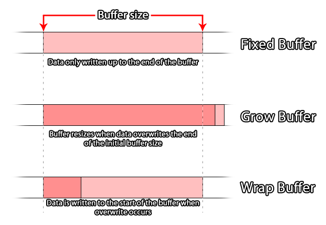

GameMaker Studio 2 propose une série de fonctions en langage GML permettant de gérer les tampons. La plupart des gens devraient être familiarisés avec ce terme, car il est utilisé tout le temps dans le traitement de l'informatique et de la programmation, mais connaître le mot ne signifie pas en réalité que vous savez ce qu'il signifie. Cette page a donc pour but d’expliquer ce qu'est un tampon et comment l’utiliser dans le contexte de la GameMaker Studio 2 de GameMaker Studio 2, bien que leur fonctionnement général soit le même, peu importe le langage ou la technologie, ce qui est l’une des raisons pour lesquelles ils sont utilisés. tellement important.
Un tampon (en programmation) est essentiellement un espace dans la mémoire système utilisé pour stocker de petits paquets de données pour à peu près n'importe quoi (par exemple, transfert de données, collisions, données de couleur, etc.). Comme il est conservé dans la mémoire système, il est très rapide à accéder et un tampon serait généralement utilisé pour un stockage à très court terme, comme pour recevoir des informations réseau avant de les traiter, ou pour stocker un point de contrôle dans votre jeu (ceci est expliqué dans exemple donné plus bas dans la page).Les tampons sont créés en allouant un espace dans la mémoire système, calculé en octets, qui est ensuite réservé pour votre jeu tant que votre jeu est en cours d'exécution ou jusqu'à ce que vous le supprimiez à l'aide de la fonction appropriée. Cela signifie que même si votre jeu n'est pas net (par exemple, sur un appareil mobile lorsque vous prenez un appel, le jeu sera mis en arrière-plan), la mémoire tampon existera toujours. Toutefois, si le jeu est fermé ou redémarré, le tampon sera perdu.
REMARQUE: le redémarrage du jeu n'effacera ni ne supprimera le tampon! Mais il empêchera tout accès au tampon précédemment créé comme la poignée id aura été perdue, ce qui provoque une fuite de mémoire qui va planter votre jeu par la suite. Ainsi, lorsque vous redémarrez une partie, n'oubliez pas de supprimer d'abord le tampon.
GameMaker Studio 2 permet la création de quatre types de tampons différents. La raison en est que les tampons sont conçus pour être un support de stockage temporaire hautement optimisé. Vous devez donc créer un tampon approprié au type de données que vous souhaitez stocker, sinon vous risquez d'obtenir des erreurs ou de causer un goulot d'étranglement. dans votre code. Avant d’expliquer plus en profondeur, examinons les quatre types de mémoire tampon disponibles (définis en tant que constantes dans GML):
Constant la description buffer_fixed
Un tampon d'une taille fixe en octets. La taille est définie lors de la création du tampon et ne peut plus être modifiée.buffer_grow
Un tampon qui grandira dynamiquement à mesure que des données sont ajoutées. Vous le créez avec une taille initiale (qui devrait être une approximation de la taille des données à stocker), puis il se développera pour accepter des données supplémentaires dépassant cette taille initiale.buffer_wrap
Un tampon où les données seront bouclées. Lorsque les données ajoutées atteignent la limite de la taille de la mémoire tampon, l'écrasement est replacé au début de la mémoire tampon et l'écriture se poursuit à partir de ce point.buffer_fast
C'est un tampon spécial "dépouillé" extrêmement rapide en lecture / écriture. Cependant, il ne peut être utilisé qu'avec buffer_u8 types de données et doivent être alignés sur 1 octet. (Vous trouverez des informations sur les types de données et l' alignement des octets plus bas dans cette page).
Ce sont les types de tampons disponibles lorsque vous utilisez GameMaker Studio 2, et celui que vous choisirez dépendra énormément de l'utilisation que vous souhaitez en faire. Par exemple, un tampon de croissance serait utilisé pour stocker un "instantané" de données afin de créer une sauvegarde car vous ne connaissez pas la quantité réelle de données qui y sera placée, ou un tampon rapide serait utilisé lors de la sauvegarde. Sachez que les valeurs que vous utilisez sont toutes comprises entre 0 et 255 ou -128 et 127, par exemple lors du traitement de données RVB à partir d’une image.  Lors de la création d'un tampon, vous devez toujours essayer de le créer à une taille appropriée au type, la règle générale étant qu'il doit être créé pour s'adapter à la taille maximale des données qu'il doit stocker et, en cas de doute, utilisez un tampon de croissance pour éviter les erreurs de remplacement.
Le code utilisé pour créer un tampon devrait ressembler à ceci:player_buffer = buffer_create(16384, buffer_fixed, 2);
Cela créerait un tampon fixe de 16 384 octets et un octet aligné sur 2, la fonction renvoyant une valeur id unique qui est stockée dans une variable pour un référencement ultérieur de ce tampon. Nous avons maintenant expliqué le concept de base d'un tampon, vous devriez en apprendre davantage sur les types de données et l' alignement d'octets mentionné précédemment.
Lorsque vous lisez et écrivez des données dans une mémoire tampon, vous le faites en "morceaux" de données définis par leur "type de données". Le '' 'type de données' '' définit le nombre d'octets alloués dans la mémoire tampon pour la valeur en cours d'écriture. Il est essentiel que vous obteniez cette information correcte sinon vous obtiendrez des résultats très étranges (voire des erreurs) pour votre code.
Les mémoires tampons sont écrites (et lues dans) séquentiellement, en ce sens que les données sont écrites les unes après les autres, chaque donnée étant d'un type défini. Cela signifie que vous devriez idéalement savoir quelles données vous écrivez dans le tampon à tout moment. Ces types de données sont définis dans GML par les constantes suivantes:
Constante de type de données Octets La description buffer_u8 1
Un entier non signé de 8 bits. C'est une valeur positive de 0 à 255.buffer_s8 1
Un entier signé de 8 bits. Cela peut être une valeur positive ou négative de -128 à 127 (0 est considéré comme positif).buffer_u16 2
Un entier non signé de 16 bits. C'est une valeur positive de 0 à 65 535.buffer_s16 2
Un entier signé, 16 bits. Cela peut être une valeur positive ou négative de -32 768 à 32 767 (0 est considéré comme positif).buffer_f16 2
Un nombre à virgule flottante de 16 bits. Cela peut être une valeur positive ou négative dans la plage de +/- 65504. (Non pris en charge actuellement!)buffer_u32 4
Un entier non signé de 32 bits. C'est une valeur positive de 0 à 4 294 967 295.buffer_s32 4
Un entier signé 32 bits. Il peut s’agir d’une valeur positive ou négative comprise entre -2 147 483 648 et 2 147 483 647 (0 étant considéré comme positif).buffer_f32 4
Un nombre à virgule flottante de 32 bits. Cela peut être une valeur positive ou négative dans la plage de +/- 16777216.buffer_u64 8
Une valeur entière non signée de 64 bits. (Pas actuellement supporté par toutes les fonctions de tampon!)buffer_f64 8
Un nombre à virgule flottante de 64 bits.buffer_bool 1
Une valeur booléenne. Ne peut être que 1 ou 0 ( true ou false )chaîne tampon N / A
Il s'agit d'une chaîne UTF-8 à terminaison nulle (0x00). En gros, une chaîne GameMaker est GameMaker dans la mémoire tampon et un 0 à la fin.
Donc, disons que vous avez créé un tampon et que vous voulez écrire des informations dessus, vous utiliseriez quelque chose comme le code suivant:buffer_write(buff, buffer_bool, global.Sound);
buffer_write(buff, buffer_bool, global.Music);
buffer_write(buff, buffer_s16, obj_Player.x);
buffer_write(buff, buffer_s16, obj_Player.y);
buffer_write(buff, buffer_string, global.Player_Name);
En regardant l'exemple ci-dessus, vous pouvez écrire différents types de données dans une mémoire tampon (vous n'êtes limité qu'à un type de données spécifique lorsque vous utilisez le type de mémoire tampon rapide ). Ces données seront ajoutées de manière consécutive dans la mémoire tampon (bien que sa la position réelle dans le tampon dépendra de son alignement d'octet, expliqué ci-dessous). Il en va de même pour la lecture d'informations à partir de la mémoire tampon. Dans l'exemple ci-dessus, vous lirez dans la mémoire tampon dans le même ordre que celui dans lequel vous avez écrit les données, en recherchant le même type de données, par exemple:global.Sound = buffer_read(buff, buffer_bool);
global.Music = buffer_read(buff, buffer_bool);
obj_Player.x = buffer_read(buff, buffer_s16);
obj_Player.y = buffer_read(buff, buffer_s16);
global.Player_Name = buffer_read(buff, buffer_string);
Comme vous pouvez le constater, vous lisez les informations dans le même ordre que dans le tampon. Pour plus d'informations sur l'ajout et la suppression de données de la mémoire tampon, veuillez consulter la section Exemples ci-dessous.
Si vous avez lu cette page, vous aurez vu des références à l’ alignement d’octets d’un tampon. Cela fait essentiellement référence à la position dans laquelle les nouvelles données seront stockées dans une mémoire tampon donnée. Comment cela marche-t-il? Eh bien, pour une mémoire tampon alignée sur un seul octet, chaque donnée est écrite dans la mémoire tampon de manière séquentielle, chaque nouvelle donnée étant ajoutée directement après la précédente. Toutefois, un tampon aligné sur 2 octets écrit chaque élément de données dans des intervalles de 2 octets. Ainsi, même si votre écriture initiale est d'un octet de données, l'écriture suivante sera déplacée pour s'aligner sur deux octets.Donc, si votre alignement d’octets est défini sur, par exemple, 4 octets et que vous écrivez une seule donnée de 1 octet, faites un buffer tell (un tell obtient la position actuelle de lecture / écriture pour le tampon), vous Vous obtiendrez un décalage de 1 (le décalage dans ce cas est le nombre d'octets à partir du début du tampon jusqu'à la position de lecture / écriture actuelle).
Cependant, si vous écrivez un autre morceau de données, également 1 octet en taille, puis faites un tampon dire, vous aurez un décalage de 5 octets (même si vous avez seulement écrit 2 octets de données) que l'alignement a capitonné les données pour l'aligner sur l'alignement du tampon sur 4 octets.
En gros, cela signifie que l'alignement n'affectera que l' emplacement où les choses sont écrites. Ainsi, si un tampon dit après avoir écrit quelque chose, il renverra la position d'écriture actuelle qui suit immédiatement les données que vous avez écrites auparavant. Notez, toutefois, que si vous écrivez ensuite un autre élément de données, le tampon déplace en interne la position d'écriture le long du multiple suivant de la taille d'alignement avant d'écrire réellement l'élément de données.
Vous trouverez ci-dessous quelques exemples d'utilisations courantes des mémoires tampons.
Un exemple simple de la façon dont un tampon peut être utilisé dans tout jeu GameMaker Studio 2 pour n’importe quelle plate-forme est la fonction game_save_buffer. Cette fonction prend un "instantané" de l’état actuel du jeu et l’enregistre dans un tampon prédéfini, qui peut ensuite être lu pour charger le jeu à nouveau.REMARQUE: cette fonction est très limitée et conçue pour permettre aux débutants d’obtenir rapidement un système de point de contrôle opérationnel, mais les utilisateurs plus avancés préféreront peut-être coder leur propre système à l’aide des fonctions Fichier, car le jeu ne sera pas sauvegardé. toutes les ressources dynamiques que vous pouvez créer au moment de l'exécution, telles que les structures de données, les surfaces, les arrière-plans et les sprites ajoutés, etc.
La première chose à faire est de créer un nouvel objet pour contrôler la sauvegarde et le chargement. Vous devrez donc en créer un et lui donner un événement Create. Dans ce cas, vous pouvez placer le code suivant:SaveBuffer = buffer_create(1024, buffer_grow, 1);
StateSaved = false;
La première ligne crée un tampon de croissance (puisque nous ne connaissons pas la taille finale des données sauvegardées) de 1024 octets et aligné sur 1 octet. Une variable est ensuite créée pour vérifier et voir si le jeu a été sauvegardé ou non (cela sera utilisé pour le chargement).
Ensuite, nous ajouterons un événement Keypress (par exemple) dans lequel nous enregistrerons l’état actuel du jeu dans le tampon créé:StateSaved = true;
buffer_seek(SaveBuffer, buffer_seek_start, 0);
game_save_buffer(SaveBuffer);
Ce qui précède va d'abord définir la variable de contrôle sur true (pour que cela soit sauvegardé lorsque nous sauvegardons le jeu dans le tampon), puis rechercher le début du tampon avant d'écrire l'état de sauvegarde actuel. Pourquoi utilisons-nous buffer_seek ? Comme mentionné dans la section Types de données de mémoire tampon ci-dessus, vous lisez et écrivez dans une mémoire tampon à partir de la dernière position à laquelle les données ont été ajoutées. Cela signifie que si vous ne réglez pas le tampon dire revenir au début puis lorsque vous vous enregistrez ajouterez les données dans la mémoire tampon à la mémoire tampon position actuelle de lecture / écriture, donc nous utilisons la fonction buffer_seek pour déplacer le tell au début de la mémoire tampon.
Nous avons maintenant enregistré l'état actuel du jeu dans un tampon. La prochaine étape consisterait à indiquer comment le charger, probablement dans un autre événement Keypress:if StateSaved
{
buffer_seek(SaveBuffer, buffer_seek_start, 0);
game_load_buffer(SaveBuffer);
}
Le jeu sera alors chargé à la fin de l'événement dans lequel vous placez le code ci-dessus.REMARQUE: Ceci est uniquement destiné à être utilisé dans la même pièce et non pour générer des jeux sauvegardés complets après la fermeture ou le redémarrage de votre jeu!
La dernière chose à ajouter à l'objet contrôleur est un code de "nettoyage". Les mémoires tampons sont stockées dans la mémoire. Par conséquent, si vous ne nettoyez pas lorsque vous en avez terminé, vous risquez d’obtenir des fuites de mémoire qui risquent de retarder et de bloquer votre partie. Vous ajouterez donc probablement un événement de fin de salle (de la catégorie Autre événement) avec:buffer_delete(SaveBuffer);
Cet objet peut maintenant être placé dans une pièce et sur une touche, enregistrer et charger l’état de la pièce à partir d’un tampon.
Lorsque vous utilisez les fonctions réseau de GameMaker Studio 2, vous devez utiliser des tampons pour créer le paquet de données envoyé via la connexion réseau. Cet exemple vise à montrer comment cela est réalisé, mais en raison de l'étendue des possibilités de mise en réseau, il est uniquement conçu pour montrer comment utiliser les tampons eux-mêmes, et non le système de réseau complet.
La première chose que nous montrerons est la création et l’utilisation d’un tampon pour le côté client de la connexion réseau. Ce tampon sera utilisé pour créer de petits paquets de données qui peuvent ensuite être envoyés au serveur. Ainsi, lors de la création d'un événement d'une instance, nous assignerions un tampon comme celui-ci:send_buff = buffer_create(256, buffer_grow, 1);
Nous réduisons la taille de la mémoire tampon (256 octets), car elle n’est pas destinée à contenir de grandes quantités de données. Nous en faisons un tampon de croissance qui évite les erreurs si nous devons ajouter plus de données à envoyer à tout moment, et l’alignement est défini sur un pour la commodité.
Supposons maintenant que nous souhaitons que notre client envoie des données au serveur. Pour cela, nous devons créer un "paquet" de mémoire tampon. Dans cet exemple, nous allons envoyer un événement Key Press, comme lorsque le joueur appuie sur la flèche gauche pour se déplacer dans le jeu. Pour ce faire, nous écrivons d’abord les données nécessaires dans le tampon, puis nous les envoyons:buffer_seek(buff, buffer_seek_start, 0);
buffer_write(buff, buffer_u8, 1);
buffer_write(buff, buffer_s16, vk_left);
buffer_write(buff, buffer_bool, true);
network_send_packet(client, buff, buffer_tell(buff));
Avant d'écrire dans la mémoire tampon, nous avons paramétré "tell" au début de la mémoire tampon, car la mise en réseau prend toujours les données à partir du début de la mémoire tampon. Nous écrivons ensuite la valeur de contrôle (celle-ci sera utilisée par le serveur pour déterminer le type d’événement à traiter), puis la clé utilisée, puis son état (dans ce cas, true pour pressé). Ce tampon est ensuite envoyé sous forme de paquet de données par la fonction réseau. Notez que nous n'envoyons pas tout le tampon! Nous n’envoyons que les données écrites, en utilisant le buffer_tell fonction pour renvoyer la position courante de lecture / écriture du tampon (rappelez-vous que l'écriture dans le tampon déplace le "dire" à la fin de ce qui a été écrit).
Qu'en est-il de la réception des données sur le serveur? Le paquet de données reçu doit être écrit dans la mémoire tampon du serveur, puis utilisé pour mettre à jour le jeu. Pour cela, nous utiliserions l' événement asynchrone de mise en réseau dans l'objet contrôleur de réseau du serveur, comme l'indique le code simplifié ci-dessous:var buff = ds_map_find_value(async_load, "buffer");
if cmd == buffer_read(buff, buffer_u8);
{
key = buffer_read(buff, buffer_s16 );
key_state = buffer_read(buff, buffer_bool);
}
L'événement asynchrone contiendra un temporaire spécial ds_map (il est automatiquement supprimé à la fin de l'événement) qui contient différentes informations en fonction du type de données entrantes provenant du réseau. Dans ce cas, nous supposons que la carte a été vérifiée et qu’il s’agit d’un paquet de données en mémoire tampon envoyé par un client. Nous vérifions maintenant le premier élément de données qui se trouve dans la mémoire tampon pour voir quel type d’événement a été envoyé. Dans ce cas, la valeur "1" représente un événement clé. Toutefois, lors du codage de ces éléments, vous devez définir des constantes pour conserver ces valeurs. simplifiez les choses - puis enregistrez la touche sur laquelle vous appuyez et son état ( true = pressé, false = libéré). Ces informations seraient ensuite utilisées pour mettre à jour tous les clients avec le nouveau statut du lecteur client émetteur.REMARQUE: le tampon créé à partir de ds_map est automatiquement supprimé à la fin de l'événement réseau asynchrone. Il n'est donc pas nécessaire d'utiliser buffer_delete ici.